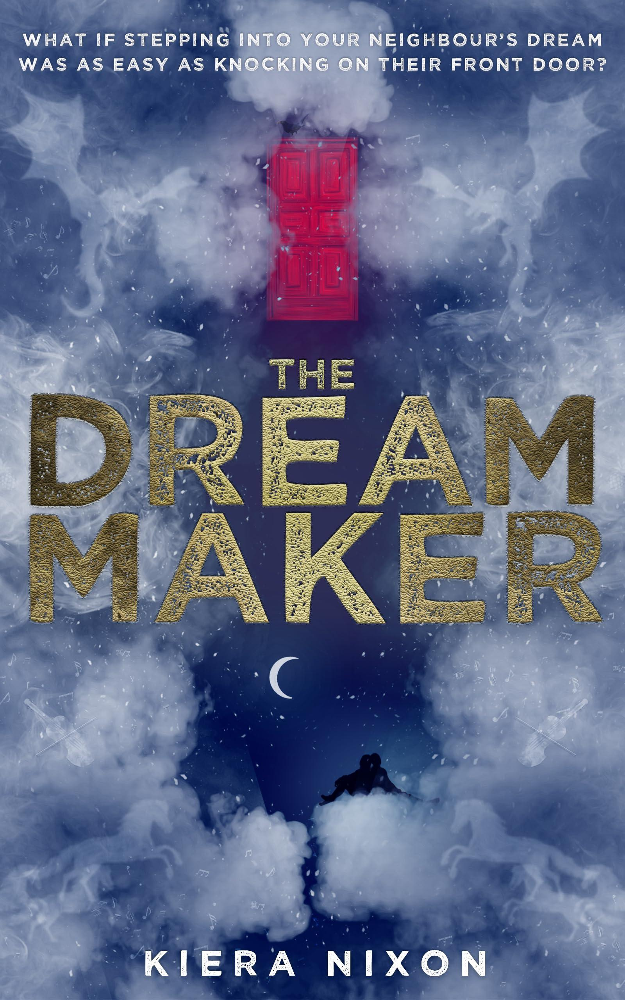
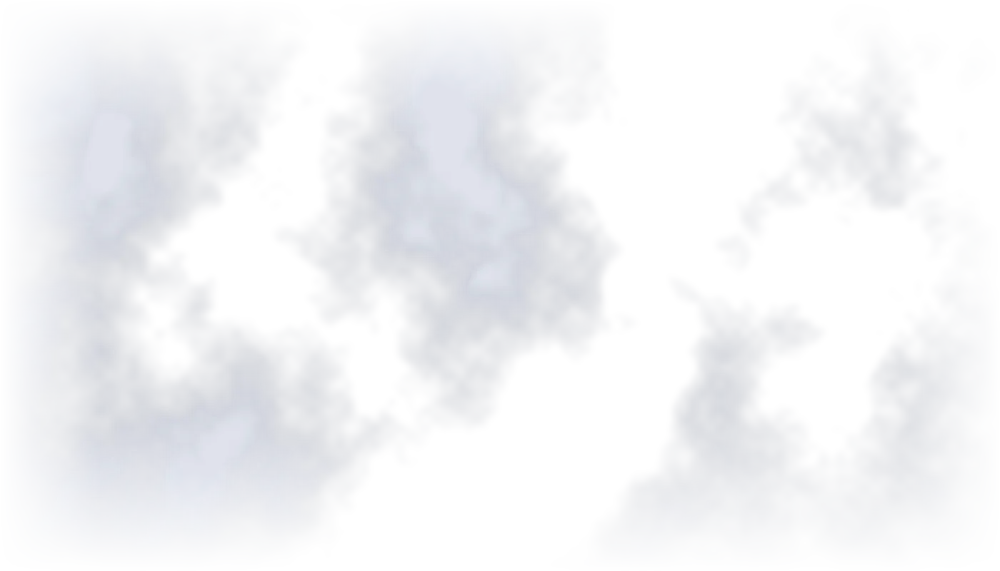
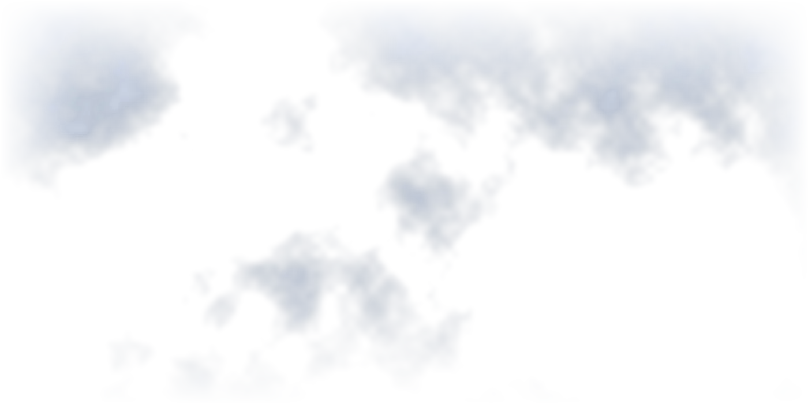
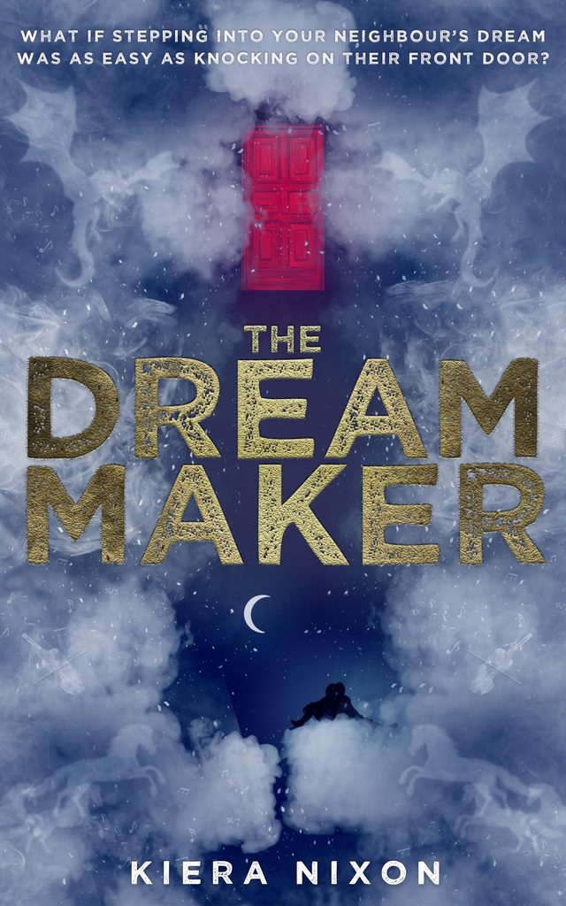
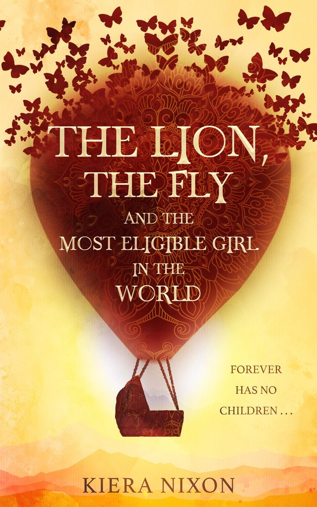

A mind cannot control what it dreams about.THE THIRD LAW OF SHARED DREAMING
Only Maatje Finkel knows better.

THEDREAM MAKER
WHAT IF STEPPING INTO YOUR NEIGHBOUR'S DREAM WAS AS EASY AS KNOCKING ON THEIR FRONT DOOR?
Welcome to the world of the dream maker. Bring a comfy pillow.
There are three scientific laws of shared dreaming
- A mind cannot reach more than a few metres from where it lies.
- A mind cannot host more than two other consciousnesses simultaneously.
- A mind cannot control what it dreams about.
Only Maatje Finkel knows better.
Eighteen-year-old Maatje is searching for the incredible dream from her childhood; a fantastical hotel created by a mysterious mind that defied every law of shared dreaming. A mind Maatje is convinced can fix her broken family and change the future of dream science.
But she's not the only one looking for it.
A YA adventure. 384 pages. Paperback and ebook.
The Lion, the Fly and the Most Eligible Girl in the World
"Do you believe in reincarnation?"
The Corporations came to power with great technologies, promising to lift their sick world out of the sands of the ever-expanding Waste and into immortality. However, such promises have yet to reach streetfighter Pad's town.
For Pad, immortality lies only in trading his violent streets for the glory of a champion beater's future in the Capital Arena, and he'll crush whoever stands in his way. Even the love of beautiful Mirik, all the more desirable for being promised to another in marriage.
But with the unintended consequence of their secret relationship growing inside of Mirik, and Pad's ruthless past snapping at his heels, attempting to put their futures back on track lead the pair to opposite sides of the Corporations' deadly game to redesign reality. There they discover the girl who's lived before.
Forever has no children . . .

Once Upon a Nixe
Another fantasy writer. Great.
Speculative.
That's just abracadabra in a lab coat.
In part. It's more curious fantasy.
Kiera has always been fascinated by the ways words can be used to twist insanity into perfect sense. She can be found at the bottom of any clear body of water and tempted out with a decent story or sandwich.
People might meet her around and about at conventions, markets, bookshops and schools. Next: YALC London, 31 October and 1 November 2026, with the Indie Rebels.
45 & 46INDIE REBELS TABLES